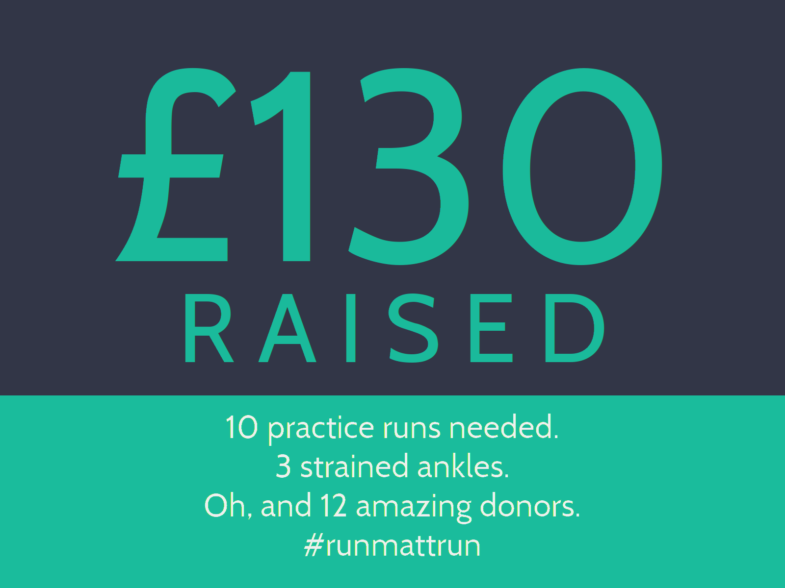

I woke up at 9:00 am yesterday morning, realising that in ninety minutes I had to be in Regent's Park to run a 5K. It wasn't something I really wanted to go and do, the bed was nice and cosy, my legs were still achey from training and it was kinda windy outside. However, somehow I ended up outside in the park with a bunch of people who were too enthusiastic for a Saturday morning.
Yada yada, the run happened and that's all good. Got a personal best time of 25 minutes 34 seconds as well, so that's always good. But the best thing was the money we raised together:

That's an absolutely phenomenal amount, and I want to thank everyone personally who donated. As you may know, the British Heart Foundation is a charity which is close to my family and seeing the generosity of you lot makes me a lot less cynical about the world, and also makes the incredible pain I'm in this morning all the more worth it.
Thanks again,